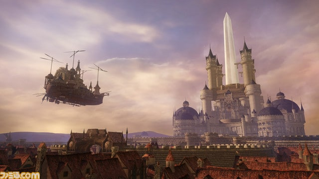
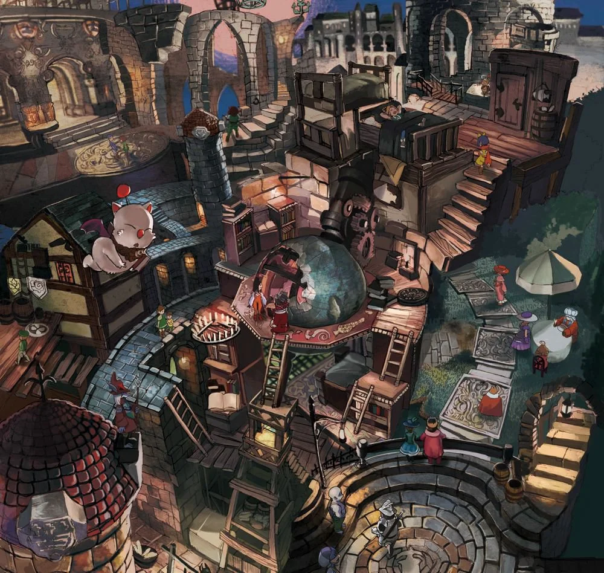
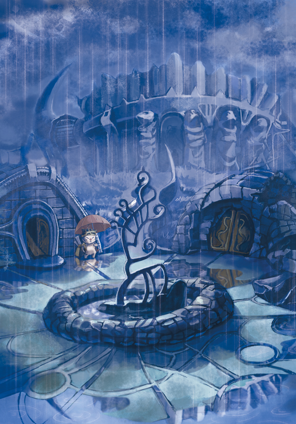
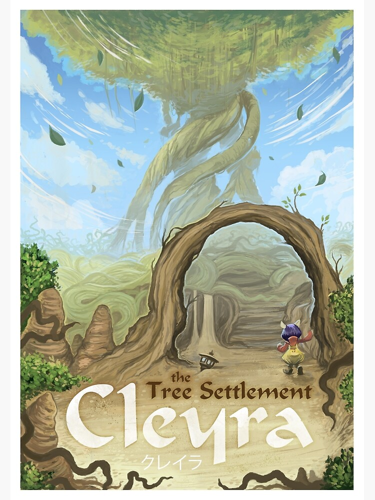

Ciudades principales
En el continente de la niebla, de la cual nacen los monstruos que tratan de destuirte, se asentan los siguientes ciudades.
-
Alexandria
Es un bello reino en el que comienza la historia, gobernado por la reina Brahne Raza Alexandros XVI. La ciudad posee una defensa extraordinaria por parte de la invocación Alejandro y una gran flota marítima de barcos. El barco insignia de Alexandria es el Red Rose dirigido por la Generala Beatrix, la cual según se dice en el juego es "la mas poderosa entre todos los hombres".
 -
Lindblum
Es la ciudad más grande de todo el mundo, rodeada totalmente por grandes murallas. Está dividida en cuatro zonas: el castillo del Gran Duque Cid Faboule IX, el barrio teatral en donde reside la banda Tantalus, el distrito industrial y el distrito comercial. Lindblum posee la mayor flota aérea de todo el planeta, comandada por el mismo gobernante, el Gran Duque.

-
Treno
Es la ciudad de la nobleza, llamada también "la ciudad que nunca duerme", destaca por su famoso concurso de cartas y por la casa de subastas del señor King.
 -
Burmecia
El Reino de la Lluvia Eterna, es una ciudad-estado. Es el lugar de nacimiento de Freija Crescent y está habitada por la raza de los Burmecianos. Burmecia está fortificada en todo su perímetro por murallas, además de estar seccionada en su interior por niveles ascendentes que dirigen hacia el centro y núcleo de la ciudad donde se encuentran los aposentos del rey. La ciudad ha estado cubierta por la lluvia desde tiempos ancestrales.
 -
Cleyra
Es una ciudad en la copa de un árbol, rodeada y protegida por una tormenta de arena provocada por uno de los cuatro fragmentos de la gema de invocación. Sus habitantes fueron antaño burmecianos, pero fruto de desacuerdos sobre las políticas bélicas del reino, crearon la ciudad de Cleyra, donde prácticamente viven al margen de Burmecia y del resto del mundo.
